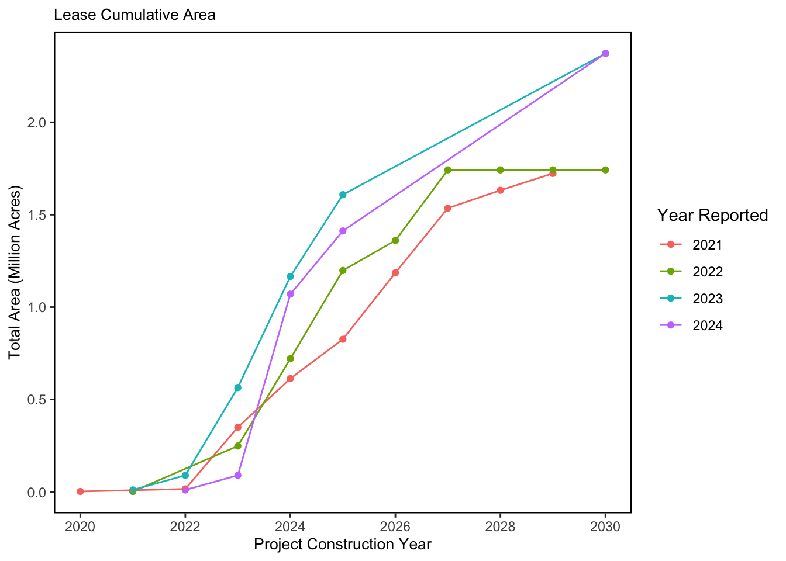

SMART Indicator Report: Speed and Scale of Offshore Wind Development in the Northeast
2 Indicator name
Speed and Scale of Offshore Wind Development in the Northeast
Includes variable(s): Cable_Acres, Cable_Miles, Exp_Cab, Gen_Cap, Inter_Cab, Num_Foundations, Num_Projects, Tot_Area_Acres
3 Indicator brief description
The footprint and timeline of offshore wind development in the Northeast by 2030
4 Indicator visualization
The colored chart below also presents the offshore wind development timeline in the Greater Atlantic region with the estimated year that foundations would be constructed (matches the color of the wind areas). These timelines and data estimates are expected to shift, but represent the most recent information available as of July 2023.

5 Indicator documentation
5.1 Are indicators available for others to use (data downloadable)?
Yes
5.1.1 Where can indicators be found?
Data: https://noaa-edab.github.io/ecodata/index.html
Description: https://noaa-edab.github.io/catalog/wind_dev_speed.html
Technical documentation: https://noaa-edab.github.io/tech-doc/wind_dev_speed.html
5.1.2 How often are they updated? Are future updates likely?
[need sequential look at datasets for update frequency. Future requires judgement]
5.1.3 Who is the contact?
Angela Silva (angela.silva@noaa.gov)
5.2 Gather indicator statistics
5.2.1 Units
Indicator | Units |
|---|---|
Cable_Acres | no Units field |
Cable_Miles | no Units field |
Exp_Cab | no Units field |
Gen_Cap | no Units field |
Inter_Cab | no Units field |
Num_Foundations | no Units field |
Num_Projects | no Units field |
Tot_Area_Acres | no Units field |
5.2.2 Length of time series, start and end date, periodicity
General overview: NA
Indicator specifics:
Indicator | EPU | StartYear | EndYear | NumYears | MissingYears |
|---|---|---|---|---|---|
Cable_Acres | All | 2021 | 2030 | 9 | 1 |
Cable_Miles | All | 2021 | 2030 | 10 | 0 |
Exp_Cab | All | 2021 | 2030 | 6 | 4 |
Gen_Cap | All | 2021 | 2030 | 6 | 4 |
Inter_Cab | All | 2021 | 2030 | 6 | 4 |
Num_Foundations | All | 2021 | 2030 | 10 | 0 |
Num_Projects | All | 2021 | 2030 | 9 | 1 |
Tot_Area_Acres | All | 2021 | 2030 | 10 | 0 |
Tot_Area_Acres | ALL | 2020 | 2029 | 9 | 1 |
5.2.3 Spatial location, scale and extent
General overview: NA
Indicator specifics:
Indicator | EPU |
|---|---|
Cable_Acres | All |
Cable_Miles | All |
Exp_Cab | All |
Gen_Cap | All |
Inter_Cab | All |
Num_Foundations | All |
Num_Projects | All |
Tot_Area_Acres | All |
Tot_Area_Acres | ALL |
5.3 Are methods clearly documented to obtain source data and calculate indicators?
Yes
5.3.1 Can the indicator be calculated from current documentation?
All data was updated for 2022 with South Fork Wind Farm FEIS and the following assumptions were made on future wind areas: * (1) There are no reported values for foundations, cable acres and miles and year of construction for NY WEA, Maine AOI, and Central Atlantic Bight draft planning area. * (2) To estimate the variables, the ratio of each (Cumul_FNDS, Cumul_Offsh_Cbl_Acres, Cumul_OffExp_Inter_Cab_Miles, TBNSinstall_no) was calculated by using reported values for existing lease area. All data is reported as ““2030”” Spatial Analysis for Project_Acres: Project Areas and Call Area acres were calculated using BOEM Project Area Shapefiles (Project_Areas_12_3_2019), BOEM NY Call Area Shapefiles (NY_Call_Areas), and NY Call Area Primary and Secondary Recommendation shapefiles (BOEM_NY_Draft_WEAs_11_1_2018) in ArcMap. Project_Areas_12_3_2019, NY_Call_Areas, and BOEM_NY_Draft_WEAs_11_1_2018 Acres were calculated using Add Field and Field Calculator tool. Python Expression = !shape.area@acres! Project_Name: Table E-4 of South Fork FEIS Project names were matched to shapefiles by name and lease number. FDNS: Number of foundations proposed or expected for each Project area taken directly from Table E-4 of South Fork DEIS. Offsh_Cbl_Acres: Values taken directly from Table A-4 in South Fork DEIS (Table A-4: Offshore Wind Leasing Activities in the U.S. East Coast: Projects and Assumptions [part 2], pg. E-3-4). Total values for MA/RI lease areas Bay State Wind, Liberty Wind, OCS-A 0522 Remainder, OCS-A 0500 Remainder, OCS-A 0521 Remainder, OCS-A 0520 were aggregated in the table (567 total acres). Values were evenly distributed across the 6 Project areas. As such, these values should be treated as estimates until more information is released specific to individual project areas and their landing sites. Dominion Energy was presented as 3 phases in Table E-4 for Project_Name (Dominion Energy Phase1, Dominion Energy Phase 2, Dominion Energy Phase 3). Only one Project shapefile area exists for this lease area OCS-A 0483. Therefore, the total shapefile acreage was evenly divided between 3 phases similar to how the foundations were treated in table E-4 (Future Offshore Wind Project Construction Schedule, pg. E-14). OffExpCab_Miles: Offshore Export Cable Length OCS-A 0482, OCS-A 0519 OCS-A 0490 had 360 offshore export cable miles reported in Table E-4. This number was divided by 3 and 120 were assigned to these three project areas.
5.4 Are indicator underlying source data linked or easy to find?
Source data are NOT publicly available. Please email angela.silva@noaa.gov for further information and queries of Speed and Extent of Offshore Wind Development indicator source data.
5.4.1 Where are source data stored?
BOEM lease area, Call Areas, Planning Area shapefiles: https://www.boem.gov/renewable-energy/mapping-and-data/renewable-energy-gis-data; Maine Area of Interest: Maine Department of Marine Resources, Central Atlantic Bight planning area draft (BOEM communication, INTERNAL ONLY private shapefile); Foundation and Cable data from South Fork Final Environemntal Impact Statement (SWFW FEIS) data tables E-4, E-4-1, E-2: https://www.boem.gov/sites/default/files/documents/renewable-energy/state-activities/SFWF%20FEIS.pdf
6 Indicator analysis/testing or history of use
6.1 What decision or advice processes are the indicators currently used in?
The data presented here is a timeline of proposed construction in the Northeast of offshore wind development projects to 2030. The lease area color corresponds to the year of proposed development. Project component data (e.g., number of foundations, cable miles, GW, and acreage for each project are described in the table). Areas currently under planning for additional lease areas are outlined in red and totals reflected in the bottom of the table. This information is up to date as of December 2023 and project statistics come from Appendix E3 of the Revolution Wind Final Environmental Impact Statement Table E-1. This indicator does not reflect potential changes to schedules from recently terminated Power Purchase Agreements for some projects (Ocean Wind 1 and 2, Empire Wind 2, and Skipjack Wind).
6.3 Do target, limit, or threshold values already exist for the indicator?
[Fill by hand; if not in key results or implications, likely does not exist]
6.4 Have the indicators been tested to ensure they respond proportionally to a change in the underlying process?
[Fill by hand; if not in introduction, key results, or implications, likely not tested]
7 Comments
[Fill below by hand once above data complete]
7.1 Additional potential links to management in addition to uses listed above
7.2 What additional work would be needed for the Council to use the indicator?
7.3 What issues are caused if there is a gap or delay in data underlying the indicator